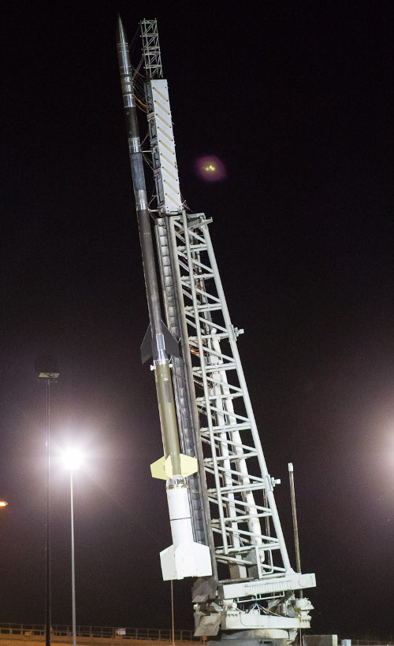

CIBER final flight on the Black Brant XII rocket. Photo courtesy of the NASA Wallops Flight Facility.
CIBER (The Cosmic Infrared Background Experiment) is a sounding rocket payload designed to characterize the near infrared (IR) background light. CIBER is built by an international collaboration of Universities and Government Laboratories which has been shedding new light on the nature of the Cosmos. With four flights between 2009 and 2014, the CIBER payload has been extremely successful. The continuation of this project, CIBER-2, improves the instrument sensitivities and expands the spectral coverage to address the questions raised from CIBER findings. CIBER-2 payload has been qualified for launch and will fly in 2020.
The Extragalactic Infrared Background (EBL) is the integrated light from all of the infrared sources in the Universe. In the near IR, these photons are produced by stars as a by-product of nucleosynthesis. Measurement of the near IR EBL therefore constrains the stellar content of the Universe.
CIBER is composed of three instruments, each with different science goals, but all measuring some aspect of the near IR background. The Imagers search for fluctuations arising in the near IR EBL from the first generation of stars and galaxies in the Universe. The Low Resolution Spectrometer measure the color of the near IR EBL, thereby constraining the stellar content of the Cosmos. The Narrow Band Spectrometer determines the brightness of the Zodiacal Light, which is due to dust in the solar system reflecting the light from the sun.
CIBER-2 is specifically designed to help disentangle the reionization signal from emission from sources at lower wavelength. One of the primary CIBER results has been unexpectedly bright large-angle fluctuations at wavelengths of 1.1 and 1.6 microns, which may be identified with stars flung outside of galaxies or other new populations that result from large-scale structure formation. The CIBER-2 data set will give us our most complete view of the near-IR background to date. Similar to its predecessor, the experiment will be launched on a NASA Black Brant IX sounding rocket.
- RIT Experimental Cosmology (English)
- RIT Center for Detectors (English)
- Kwansei Gakuin University CIBER Group (Japanese)
- Nov 18, 2019: CIBER-2 featured on RIT University News [Read more...]
- Aug 29, 2016: CSTARS team featured on ENGINEERING.com [Read more...]
- Aug 10, 2016: CSTARS team featured on RIT University News [Read more...]